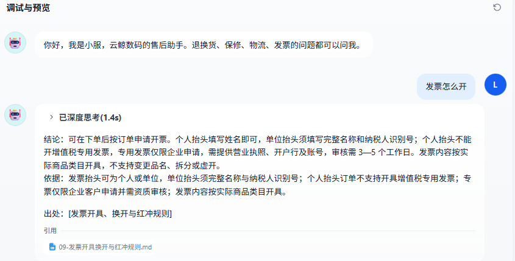
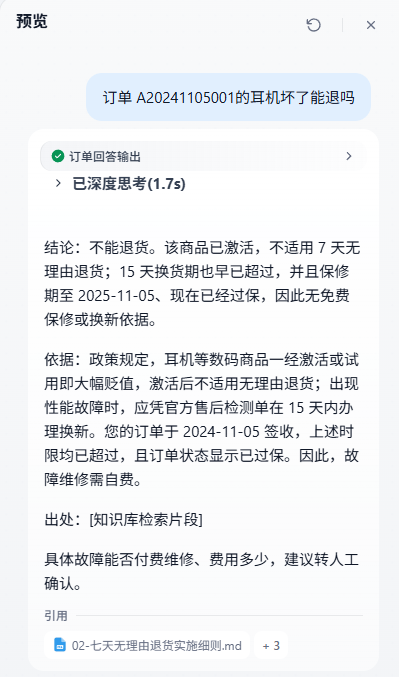
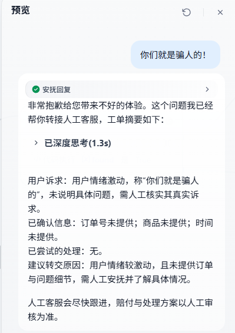

01问题
客服每天在处理同一批问题，而处理方式是串行的。
售后客服的日常：退换货条件、订单到哪了、能不能退、运费谁出、投诉怎么升级。现状是人工判断意图 → 翻 15 篇政策 → 切订单系统 → 组织话术，单次 3–5 分钟（估算）。
重复劳动
同一批规则每天被反复问，答案稳定但每次都要重新组织。
信息割裂
「我这单能不能退」要同时看订单日期、状态和品类政策，分散在两个系统里。
口径不一
新人记不住例外条款，投诉升级靠个人经验，同类问题答案不一致。
关键判断：这个场景适合「检索 + 工具 + 路由」的 Chatflow，不适合一个万能提示词。因为政策可结构化、订单可查询、问题可分类，而且失败可以转人工。
02方案
一个 Chatflow，四路分流。
下单天数、7 日窗口、发货超时、保修状态都是确定逻辑，模型只负责解释，不自行推算日期。
破损 / 退货 / 退款在政策、订单、物流里都出现，按关键词必错；三类判定写成互斥条件。
分类器固定小模型，生成模型可替换，已实测 DeepSeek ↔ Qwen 并记录差异。
检索不到、查无订单、赔付定责，一律转人工，并给出结构化摘要。
03演示
4 分钟，覆盖六个场景和一次转人工。
录制于 2026-11-09，最终发布版本 be016de2，模型 deepseek-flash。视频保留了现场回答的真实波动，没有剪成「每条都对」。



04结果
30 条分层评测，任务完成口径，判分代理独立判 + 边界项人工复核。
| 指标 | 结果 | 说明 |
|---|---|---|
| 一次解决率 | 28/30（93%） | 统一「任务完成」口径 |
| 应转人工用例 | 6/6 | 摘要带 P1/P2/P3 分级 |
| 应拒答用例 | 3/3 | 超范围问题固定话术拒绝 |
| 政策类引用命中 | 11/11 | 检索片段命中期望文档 |
| 幻觉 | 0/30 | 与订单数据 / 知识库冲突的条数 |
| 平均响应 | 7.0s | p50 6.2s，max 17.1s |
评测集 30 条，按 6 类场景分层：政策 8 / 订单 6 / 订单+政策 5 / 物流 4 / 投诉 4 / 超范围 3，含 4 条多轮、6 条应转人工、3 条应拒答。样本小，数字不代表线上指标。
05迭代故事
这个项目最想展示的部分：不是「一次做对」，而是「评测 → 归因 → 改动 → 复测」的闭环。
| 阶段 | 改动 | 结果 |
|---|---|---|
| 首版 Chatflow | 基础四路分流 | 21/30（70%） |
| 第一次迭代 | 多轮记忆 + 订单时效布尔值（日期逻辑搬进代码节点） | 24/30（80%） |
| 第二次迭代 | 分类器互斥规则 + 投诉 P2/P3 分级 | 28/30（93%） |
两次改动都不是「调提示词试试」，而是从 badcase 定位到具体节点：
- 订单题错 → 模型在自行推算日期 → 把日期逻辑搬进代码节点，输出「7 日窗口 = 是/否」「已超 48 小时」
- 物流题错 → 分类器把「破损 / 驿站」当成查单 → 重写三类互斥判定规则
- 投诉题错 → 摘要提示词没有分级 → 补 P2 / P3 规则，4 小时 / 30 分钟响应写入摘要
E05：检索对了，模型漏「签收 24 小时内反馈」→ 模型能力不足。
E19：检索没召回拒收条款 → 检索错。四次运行检索结果一致，不是随机波动。
一个能说明问题的细节：分类器互斥规则改完，政策类引用命中率从 8/11 回到 11/11 —— 检索链路一个字没改，只修了路由。
06能力边界
只做「规则、状态、路径」，不碰「钱、权、隐私」。
- 不承诺赔付金额，不代替人工定责（E25：拒绝「赔 1000 块」）
- 不执行退款、退货、改地址等写操作
- 不查他人订单，不提供地址 / 手机号
- 不回答售后之外的问题（E28–E30）
07模型选型
同一批 15 条、同一工作流，只换三个回答节点。
| 模型 | 通过 | 单条 tokens | 平均延迟 | 单条成本（粗估） |
|---|---|---|---|---|
DeepSeek deepseek-flash | 13/15 | 3,048 | 7.3s | ≈0.0039 元 |
Qwen qwen-plus | 12/15 | 2,787 | 7.3s | ≈0.0029 元 |
结论选 DeepSeek：Qwen 更便宜，但把「订单已取消」答成「可直接申请退款」，这类指令遵循错误在售后会直接多一张工单。两者单次成本差 0.001 元，不是决策变量。
成本为粗略估算：按 2026-11 公开标价近似，未计 embedding、存储与缓存命中；Dify 日志中该模型未配置价格，无法取真实账单。
08我做了什么
- 写 15 篇售后政策文档（适用范围 / 规则 / 例外 / 标准话术），建知识库与检索配置
- 造 30 条模拟订单 + 30 条分层评测集，定义 5 类失败归因
- 设计并搭 Chatflow：分类器、参数提取、代码查单、双路知识检索、三套回答提示词、工单摘要
- 写 Python 评测脚本：批量跑、多轮会话、判分合并、汇总指标
- 做两轮 badcase 归因与修复，模型对比与成本估算
材料
09工程实现
产品链路之外，另有可复现的工程实现：网关、工具层、检索实验与 MCP 服务。
FastAPI 网关与压测
100 次 / 20 并发：p50 14.1s、p95 18.2s、错误率 0%。含超时重试、trace_id 结构化日志；网页端已加代码节点剥离思维链。
Function Calling 工具层
DeepSeek 工具循环 + 11 条用例：工具选择 11/11、参数 11/11；预标注 9/11，复核后确认 2 条是标注过严。
RAG 检索对比
LlamaIndex + bge-small-zh，3 种分段 × 2 种 TopK。文档召回全部满分，用 top1 / MRR / 条款召回定位「500 字 + TopK 3 会切断保修条款」。
MCP Server

把订单查询与政策检索暴露为 2 个 MCP 工具，外部客户端可列出并调用；截图来自 MCP Inspector 实际运行。
工程仓库：Lkccc-1/after-sales-agent（代码、原始结果、复现命令）· 产品材料：after-sales-agent-dify
10已知局限
- 评测是 30 条分层小样本，判分为人工 + 判分代理，不代表线上指标
- 订单数据是 30 条模拟数据，未接真实订单系统
- 没有身份核验、没有工单系统对接、没有写操作
- 豆包模型无 Key，未实测，只做了公开价格对比